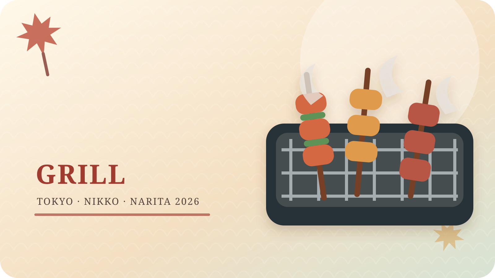
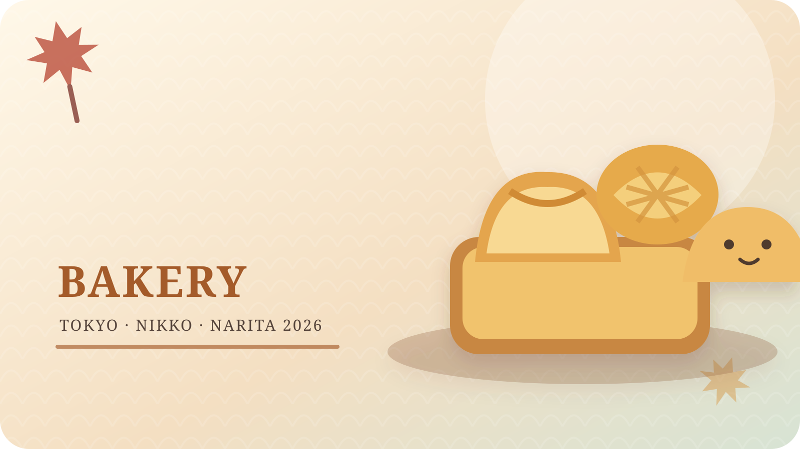
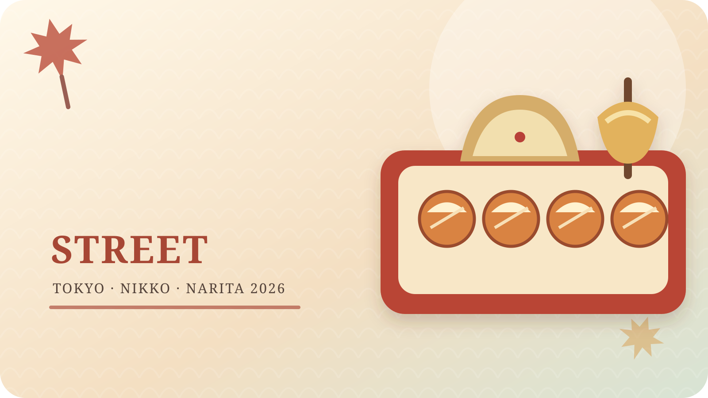
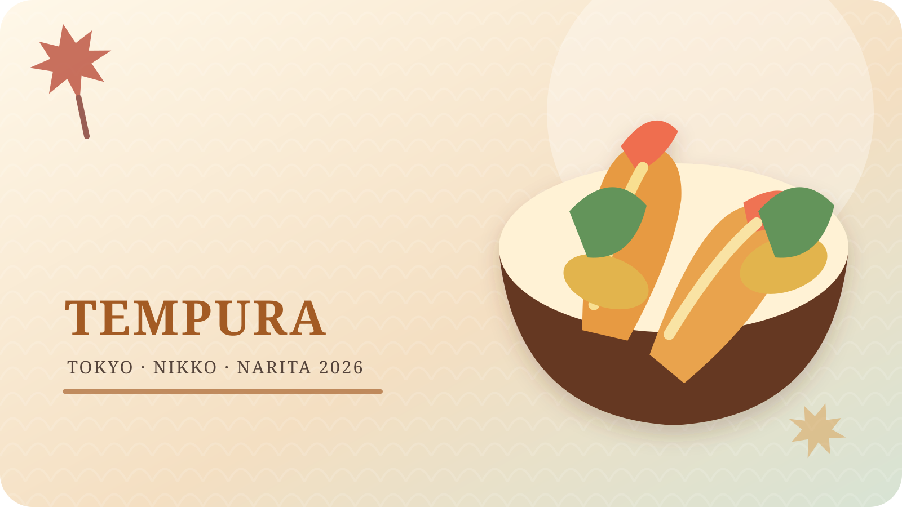
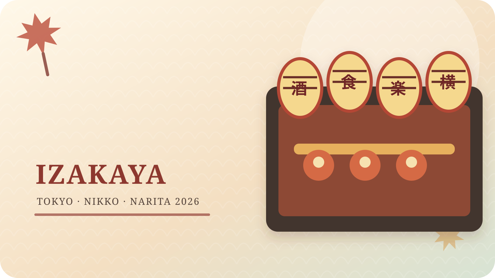
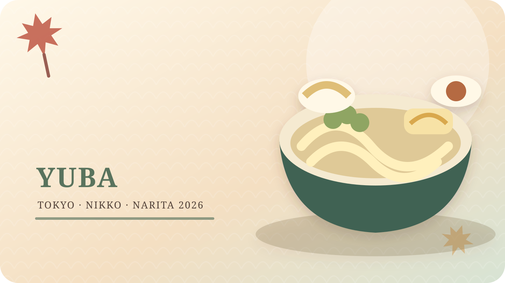
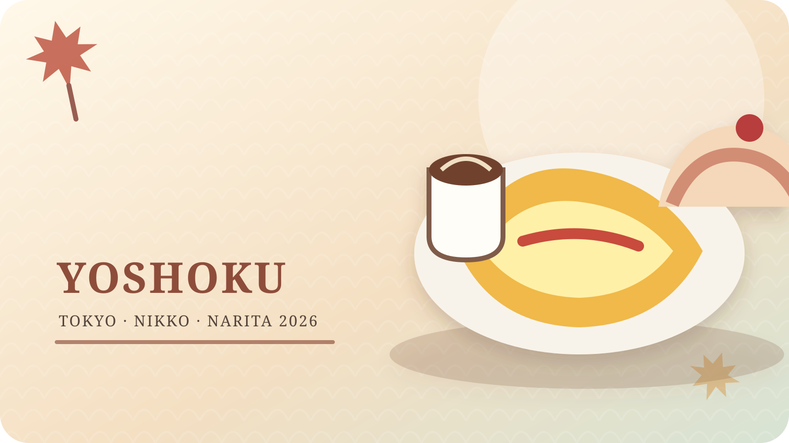

依行程日期查看餐廳
點選卡片開啟該餐廳完整攻略
2026/11/21（六）｜本所吾妻橋・淺草・丸之內
 招牌｜朝一築地丼
招牌｜朝一築地丼
野口鮮魚店
DAY 1 放妥行李後的第一餐；以 16:00 晚餐開店為目標，7 人接受分桌並設定候位停損。

招牌｜元祖鹽文字燒「生海苔蝦仁鹽味」文字燒 CHICO
DAY 1 以野口鮮魚店為第一選擇；若野口售罄、候位過久或臨時休息，再改來吃文字燒。

招牌｜元祖鹽麵包鹽麵包屋 Pain Maison
便宜、快速、代表性高；建議每人先買原味鹽麵包，再挑一個夾餡款。
鳥貴族 淺草店
適合不同航班抵達後的 7 人會合餐；價格好控管，但週六晚間一定要訂位。
2026/11/22（日）｜三軒茶屋・豪德寺・梅丘・新宿
nukumuku 三軒茶屋
適合進豪德寺前補充早餐；重點是 1 樓選麵包，時間有限就不要等 2 樓正餐。
 招牌｜招福焼（招福貓造型）
招牌｜招福焼（招福貓造型）
RARASAND 招福貓甜點咖啡
造型與豪德寺主題最連貫；重點是招福燒，不必為了完整咖啡時段久候。
 招牌｜咖啡拿鐵（人氣第一）
招牌｜咖啡拿鐵（人氣第一）
IRON COFFEE 豪德寺
比 RARASAND 更適合真正想喝好咖啡的人；週日 09:00 開，可作早餐後第二站。
梅丘壽司美登利 總本店
DAY 2 的核心餐廳；星期日不要只提早 30 分鐘，建議 09:40–10:00 就派代表操作發券機。
 招牌｜天然豚骨拉麵
招牌｜天然豚骨拉麵
一蘭 新宿歌舞伎町店
DAY 2 新宿採買後的正式晚餐；24 小時營業讓時間更有彈性，但 7 人應接受分開入座。
2026/11/23（一・日本國定假日）｜谷根千・押上・晴空塔

2026/11/24（二）｜神宮外苑・表參道・澀谷・新宿
 招牌｜綜合數字焦糖盒
招牌｜綜合數字焦糖盒
NUMBER SUGAR 表參道本店
體積小、好攜帶、送禮辨識度高；建議直接買綜合盒，不必逐顆研究太久。
 招牌｜カルボナーラ釜たまうどん／培根奶油烏龍麵
招牌｜カルボナーラ釜たまうどん／培根奶油烏龍麵
麵散
培根奶油烏龍麵值得吃，但本次是星期二，通常只營業到傍晚，必須排午餐。

招牌｜鹽蔥美乃滋章魚燒笑たこ 原宿表參道店
適合多人分一盒、快速補一口；不要每人一份，會影響晚餐。
 招牌｜Mille Crepes 水果千層
招牌｜Mille Crepes 水果千層
HARBS LUMINE EST 新宿店
蛋糕份量大，適合 2 人分一片；若晚餐已訂牛舌或海老丸，HARBS 只作候補，不宜排完整下午茶。
牛舌的檸檬 新宿總本店
牛肉組的另一個核心餐廳；6 人以上不要只靠線上，提早電話確認座位與套餐。
海老丸拉麵
不吃牛肉者的特色分流首選；點「元祖海老丸＋定番燉飯」才能完整體驗。
2026/11/25（三）｜淺草・上野
MŪYA 吐司咖啡廳
地點漂亮、早餐節奏容易控制；重點吃招牌「ムー」吐司，不需要點太多。
淺草花月堂 本店
剛出爐最有價值；全團 2–3 個共享即可，不要為拍照買過量。
 招牌｜抹茶 Gelato No.7
招牌｜抹茶 Gelato No.7
壽壽喜園 淺草本店
淺草甜點中最值得保留的一站；建議 No.7 與較淡口味各一球對比。
 招牌｜どら焼き 黒あん／黑餡
招牌｜どら焼き 黒あん／黑餡
龜十 銅鑼燒
要吃就早上先買；傍晚容易售完，排隊 30–60 分鐘要預先納入。
Chinya 黑毛和牛壽喜燒
牛肉組的傳統大餐；6 人應提早訂位，午餐選套餐比現場單點更有效率。

招牌｜穴子天丼天麩羅 秋光 淺草本店
不吃牛肉者與 Chinya 牛肉組分流最順；穴子與海鮮天丼是首選。

招牌｜雷もんじゃ－下町文字燒淺草橫町
優點是 7 人可依口味分店、氣氛熱鬧；缺點是「橫町」不是單一餐廳，營業與訂位要看各店。
2026/11/26（四）｜SPACIA X・日光

2026/11/27（五）｜奧日光・世界遺產區

招牌｜ゆば御膳／湯波御膳さんフィールド 湯波御膳
DAY 7 原行程只寫「日光傳統餐館」，這間是最穩妥的具體化：星期五營業、湯波御膳完整、位置順路。
日光湯波巻 全 ZEN
官方菜單頁顯示已於 2026/7/1 恢復營業，但採部分菜單；11/27 晚餐與 7 人接待仍須直接確認，因此保留為條件式備選。

招牌｜オムレツライス／蛋包飯明治之館
若不想把 DAY 7 全押在湯波料理，這是景觀、建築與餐點兼具的可靠備案；招牌是蛋包飯與起司蛋糕。